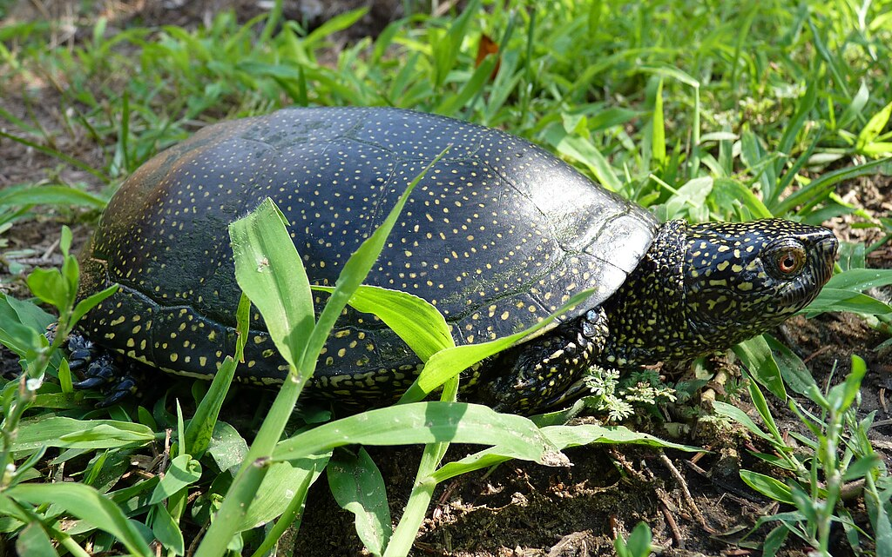
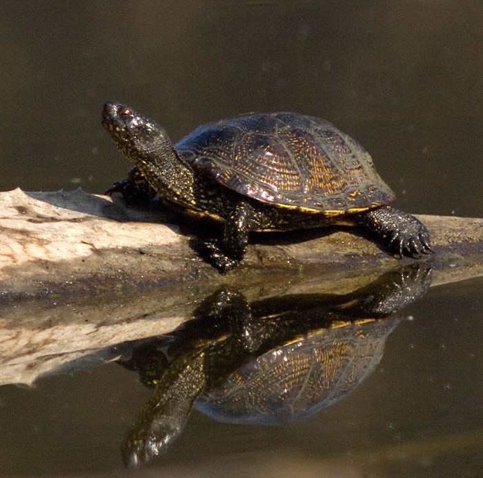

Objęty całkowitą ochroną gatunek żółwia występujący w Polsce. Ochrona obejmuje nawet zakaz fotografowania, filmowania i obserwacji mogących powodować płoszenie lub niepokojenie! Osiąga długość około 19 cm. Karapaks ma oliwkowo – zielony z żółtymi znaczeniami, skórę ciemnozieloną pokrytą żółtymi plamkami. Z uwagi na zagrożenie wyginięciem nie jest dozwolona hodowla tego żółwia w domu.
 2023 | Autorka strony: Kinga Markowska nr indeksu: 164407